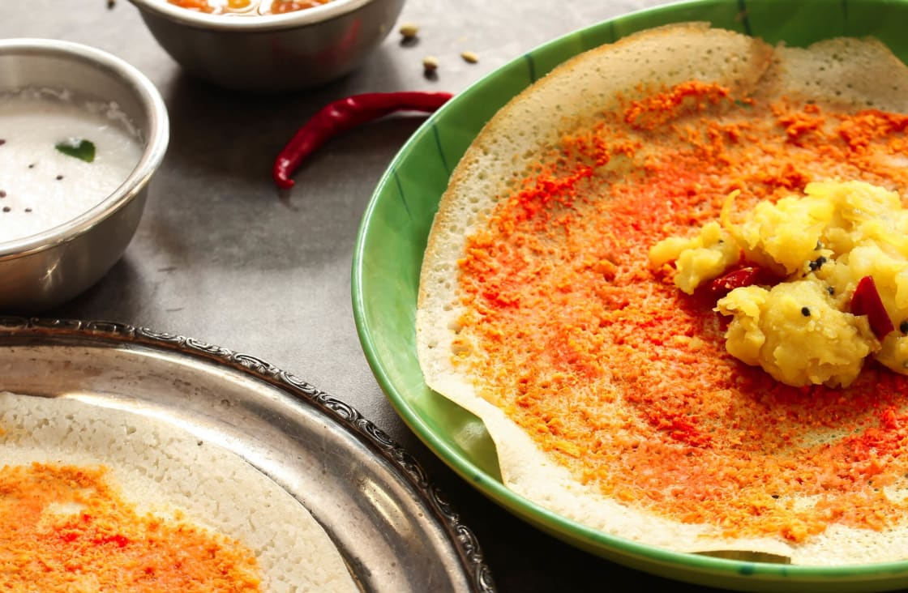

Home
Masala Dosa

Description
The traditional southern Indian dish known as masala dosa is popular throughout the country, made from a batter of soaked rice and black lentils, which are ground into a paste and blended to create a thick batter, usually left to ferment overnight. The mixture is enriched with a handful of fenugreek seeds, which gives the dosa its distinctive golden-brown color and a delicious, crispy texture.
It is then baked on a hot oiled griddle into a thin pancake and often stuffed with potatoes, onions, and mustard seeds before being garnished with grated coconut and chopped coriander. It is usually consumed as a quick snack, but can also be a breakfast dish.
Ingredients
For Potato Masala:
- Oil – 2 tbsp
- Mustard Seeds – 1 tbsp
- Cumin Seeds – 1 tbsp
- Cha7na Dal – 1 tbsp
- Urad Dal – 1/2 tbsp
- Asafoetida – 1 pinch
- Dried Red Chilli – 1
- Curry Leaves
- Onion (chopped) – 1/2
- Potatoes (boiled and mashed) – 3
- Ginger (chopped) – 1
- Green Chilli (chopped) – 1
- Coriander (chopped) – 1 tbsp
- Turmeric – 1/2 tbsp
- Salt – 1/2 tbsp
- Lemon Juice – 1 tbsp
For Red Chutney:
- Chana Dal – 2 tbsp
- Onion (chopped) – 1/2
- Ginger (chopped) – 1 inch
- Cloves of Garlic (chopped) – 3 cloves
- Oil – 2 tbsp
- Dried Kashmiri Red Chillies – 3
- Salt – 1/2 tbsp
- Turmeric – 1/4 tbsp
- Water –1/4 cup
Steps
- Preparing the Potato Masala:
Add mustard seeds, cumin seeds, chana dal, urad dal, hing, dried chilli and curry
leaves in 2 tbsp of heated-up oil in a wok. Allow them to splutter. Sauté well.
Add onions, green chilli and ginger and sauté.
Add herbs like turmeric and salt. Add mashed potatoes and mix the contents
thoroughly.
Cook the potatoes well and finish by adding coriander and lemon juice.
- Preparing the Red Garlic Chutney
Roast chana dal in 2 tbsp of heated-up oil till it turns golden brown.
Add onions, garlic and ginger and stir well. Also, add dried red chillies and turmeric.
Grind the mixture after adding salt.
Blend the paste by adding water as needed.
- Preparing the Dosas:
Mix the fermented dosa with 1/2 tbsp salt and 1/4 tbsp sugar.
Heat the griddle and pour a ladle full of batter. Spread the batter in a circular
motion.
Spread butter and the chutney over the dosa liberally.
Add potato masala on one side of the dosa.
Roast the dosa for 30 seconds, fold it over the empty side and serve hot with sambar
and coconut chutney.